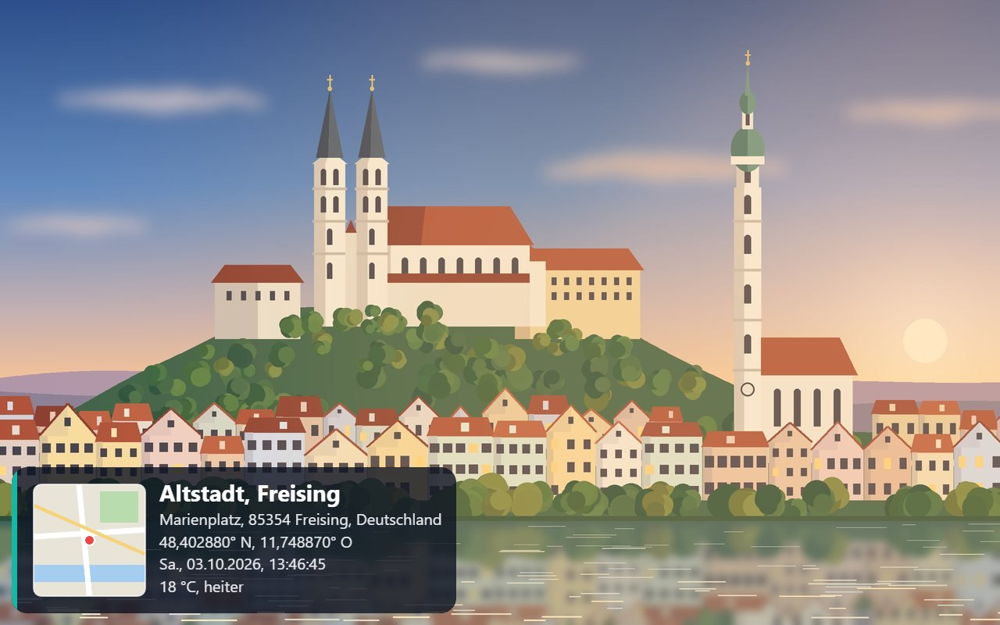

Ortsstempel im Bild
Ort, Adresse, Koordinaten, Datum, Wetter und Mini-Karte werden fest ins Foto oder Video geschrieben. Mehrere Vorlagen zur Auswahl.
GPS-Kamera für Handy und Tablet
GeoCam stempelt Ort, Adresse, Koordinaten, Datum und Wetter direkt ins Bild – auf Wunsch mit deinem eigenen Logo. Dazu: Parkplatz merken und Standort als QR-Code weitergeben.

Eine Kamera, die den Ort gleich mitschreibt – und die Aufnahmen danach wiederfindet.
Ort, Adresse, Koordinaten, Datum, Wetter und Mini-Karte werden fest ins Foto oder Video geschrieben. Mehrere Vorlagen zur Auswahl.
Lade dein Firmen- oder Vereinslogo hoch – es erscheint automatisch auf allen neuen Aufnahmen. Praktisch für Baustelle, Objektbegehung oder Lieferung.
Aufnahmen werden automatisch nach Ort gruppiert. So findest du alle Bilder einer Adresse mit einem Tipp.
Jede Aufnahme erscheint als Punkt auf der Karte. Antippen öffnet das Bild samt Ortsangaben.
Von jeder Aufnahme aus führt ein Tipp zur Navigation in Google Maps – zurück an genau die Stelle, an der das Foto entstand.
Ein Foto vom geparkten Auto genügt. GeoCam zeigt dir später Entfernung, Richtung und den Fußweg zurück.
Aus deinem Standort oder dem Ort einer Aufnahme wird ein QR-Code. Scannen öffnet die Stelle in Google Maps.
GeoCam lässt sich wie eine App auf den Startbildschirm legen. Kamera, Stempel und Galerie funktionieren auch ohne Netz.
Mein Parkplatz
Fremde Stadt, großes Parkhaus, langer Tag: GeoCam merkt sich die Stelle, an der du das Foto gemacht hast.
Standort-QR
Der QR-Code enthält einen Google-Maps-Link zu genau diesem Punkt. Wer ihn scannt, kann sich direkt hinführen lassen – ohne GeoCam installiert zu haben.
Probier es aus: Der Code links ist echt und führt zum Marienplatz in Freising.
GeoCam im Browser öffnen und Kamera sowie Standort freigeben.
Foto oder Video machen – der Stempel ist schon im Sucher zu sehen.
In der Galerie nach Ort, auf der Karte oder per Route zurück zur Stelle.
Kein Konto, kein Upload. Fotos, Videos, dein Logo und der gemerkte Parkplatz werden ausschließlich im Speicher deines Browsers auf deinem Gerät abgelegt.
Was ins Netz geht. Damit aus Koordinaten eine Adresse, ein Wetterwert und ein Kartenausschnitt werden, fragt GeoCam deinen Standort bei OpenStreetMap (Nominatim, Kartenkacheln) und Open-Meteo ab. Route und QR-Ziel öffnen Google Maps erst, wenn du darauf tippst.
Gut zu wissen. Wer die Browserdaten löscht, löscht auch die Aufnahmen – wichtige Bilder also teilen oder exportieren.
Nein. GeoCam läuft direkt im Browser. Wer möchte, legt die Seite als App auf den Startbildschirm – dann startet sie direkt in der Kamera.
Ohne Kamera gibt es kein Foto, ohne Standort keinen Ortsstempel. Beide Freigaben erteilst du im Browser und kannst sie dort jederzeit widerrufen.
Kamera, Koordinaten-Stempel, Galerie, Parkplatz-Merker und QR-Code funktionieren offline. Adresse, Wetter und Kartenbilder brauchen eine Verbindung.
So genau, wie dein Gerät ihn liefert – im Freien meist wenige Meter, in Gebäuden und Parkhäusern deutlich ungenauer. GeoCam zeigt die aktuelle Genauigkeit im Sucher an. Im Parkhaus hilft deshalb vor allem das Foto selbst.
Ja. Über „Import“ lassen sich Bilder aus der Galerie des Geräts übernehmen; enthaltene GPS-Daten werden dabei ausgelesen.